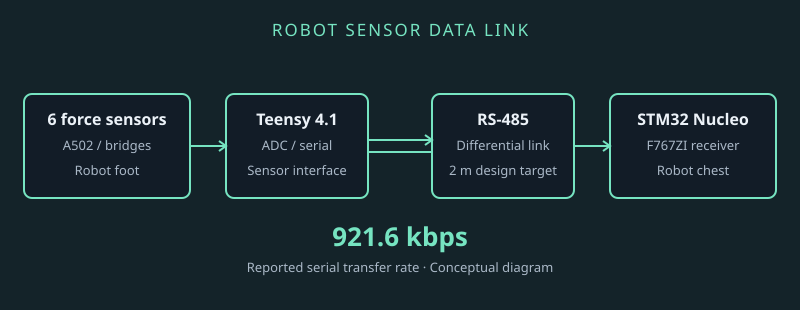

RESEARCH & DEVELOPMENT / UNIVERSITY OF DENVER · 2024 RESEARCH DRAFT
EMI Mitigation in Bipedal Robots
Robust force-sensor data acquisition and transmission in a motor-driven robotic platform using differential RS-485 communication, analog sensor interfaces and iterative PCB design.
Research objective
Motor-generated electromagnetic interference can corrupt force-sensor data used for balance in bipedal robots. The research investigated reliable transmission from six FlexiForce A502 sensors per foot to an STM32 Nucleo-F767ZI board in the robot's chest, with a target rate of 500 kbps over a 2 m link.
Engineering implementation
- Used a Teensy 4.1 (ARM Cortex-M7) for analog sensor acquisition and serial communication.
- Implemented a 3.3 V Wheatstone bridge interface for each force sensor.
- Compared an initial serial communication approach that experienced corruption with motors running against a differential RS-485 approach using MAX13487-based transceivers.
- Designed a compact KiCad PCB for the robot foot and revised the placement of a DC-DC converter to reduce local interference near the microcontroller.

Reported results
The January 2024 draft reports successful transfer at 921,600 baud (approximately 921.6 kbps), exceeding the 500 kbps target, with low observed noise. The report compares motor-on and motor-off sensor measurements. Bit error rate, full operating-range immunity and independent validation are not established by the available draft.
Research context
University of Denver, Ritchie School of Engineering and Computer Science. Collaborative Mithra robotics research under the supervision of Professor Siavash Rezazadeh, with graduate and undergraduate team members. The draft describes the work as being in the testing phase.
Source: January 2024 research essay draft, “Minimizing the effects of electromagnetic interference During Data transfer in robots.”